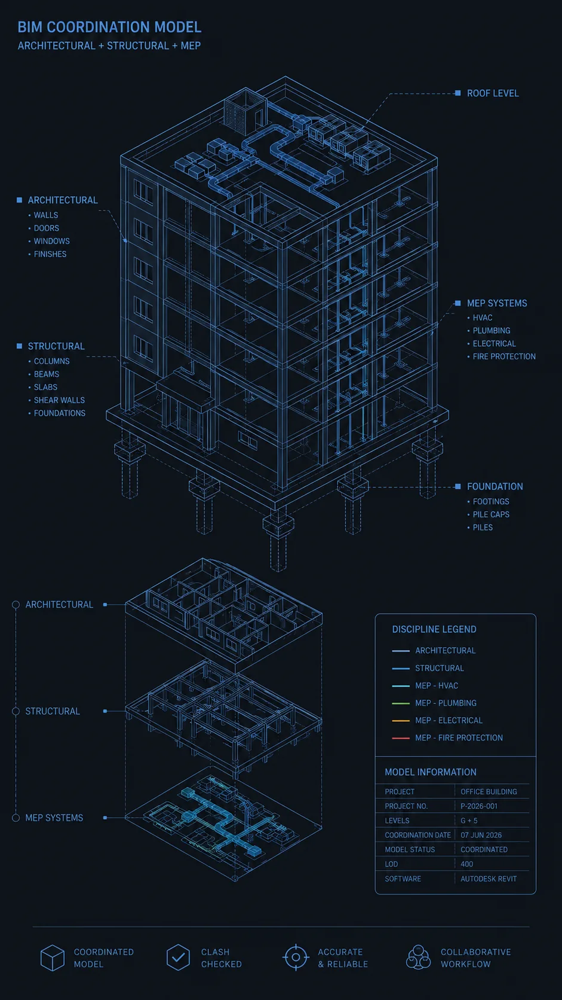
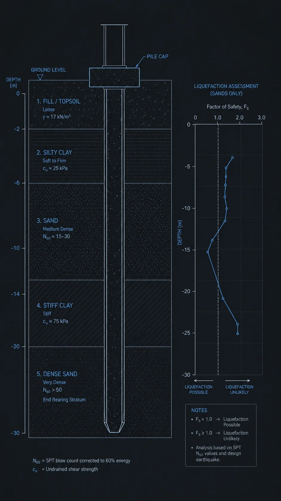

Category A
view_in_ar BIM & Digital Delivery
A1
2D-to-BIM Conversion (PDF / DWG to Revit)
Convert legacy CAD drawings and scanned plans into clean, coordination-ready Revit models.
- LOD 200–300 geometry (upgradeable to LOD 400)
- Correct Revit categories, families, naming conventions
- IFC export for interoperability
A2
Parametric Revit Family Creation (LOD 300–400)
Custom parametric families built for precise BIM integration.
- Embedded metadata: material, load, fire rating, specification
- ISO 19650-compliant naming and classification
- Tested in a live Revit project environment
A3
4D/5D Construction Simulation & Clash-Free BIM Coordination
Full multidisciplinary BIM coordination under ISO 19650.
- Navisworks Clash Detective report (hard, soft, workflow)
- 4D Timeliner-linked construction sequence simulation
- 5D cost-linked model with element-level BOQ quantities
A4
Technical BIM Debugging & FEA Rescue
Diagnostic and correction service for non-converging models and coordination issues.
- Root-cause documentation and corrected model file
- Applicable to Revit, Navisworks, ETABS, SAP2000, PLAXIS

Category C
layers Geotechnical Engineering
C1
Basic Geotechnical Modeling & Analysis (PLAXIS 2D/3D)
Settlement, slope stability, or consolidation analysis with sensitivity checks and full PDF report.
C2
Advanced Geotechnical FEA — Soil-Structure Interaction & Dynamic Analysis
HS-Small, UBC3D-PLM, Norsand models; TBM vibration propagation; liquefaction screening for tunnels, deep foundations, metro infrastructure.

Have a Scope in Mind?
Share a few project details and the team will put together a scoped proposal.
Start an Inquiry arrow_forward